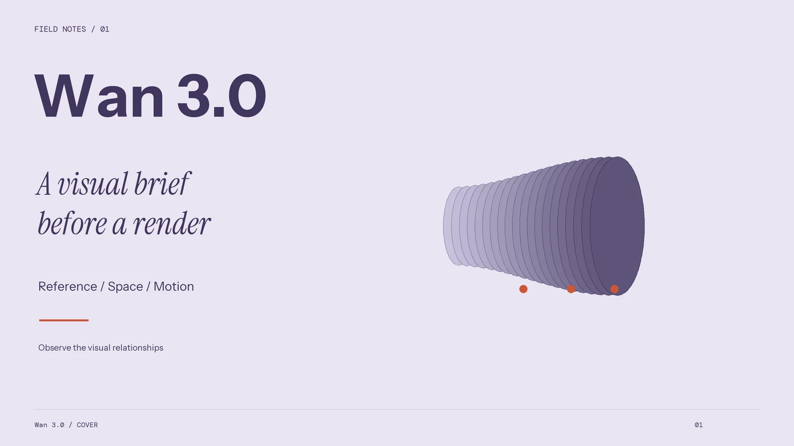
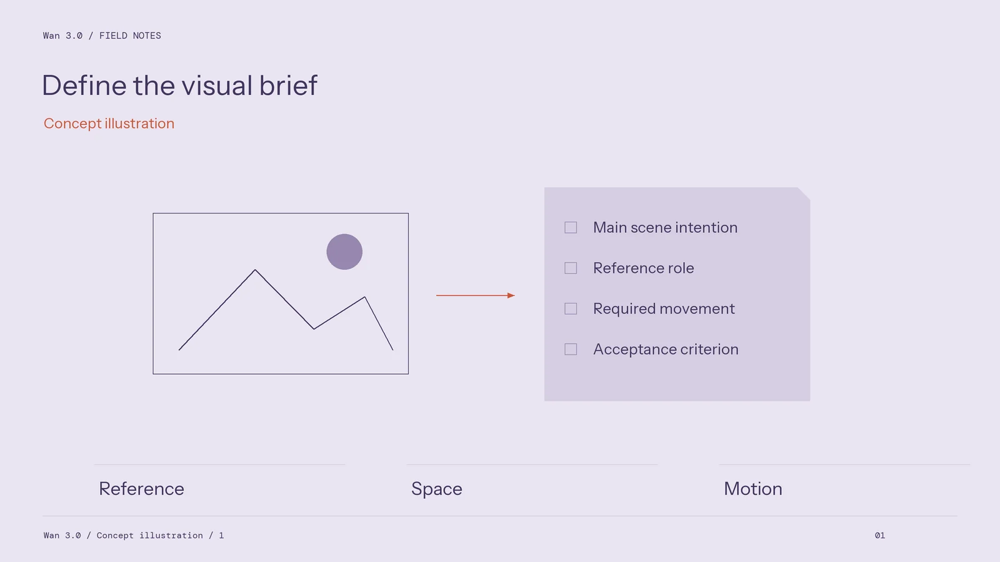
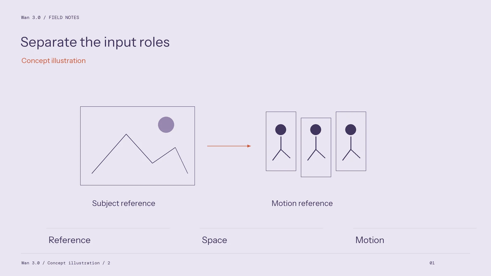
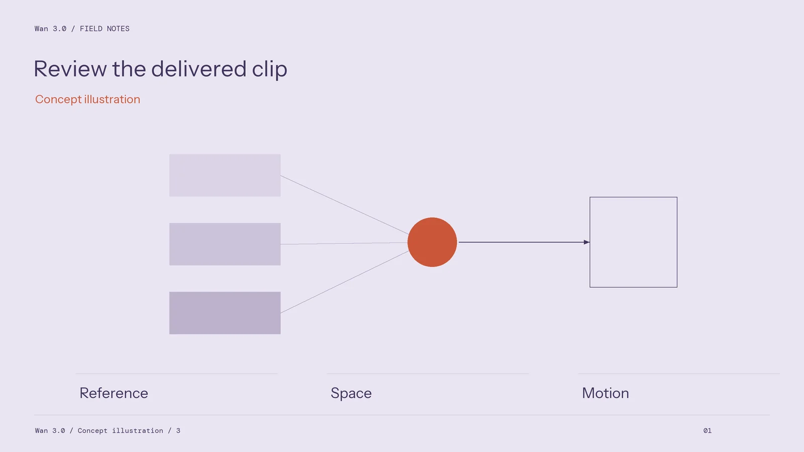

Reading Wan 3.0 Specifications Before Building a Production Workflow

A video generator can look convincing in a short demonstration while leaving important production questions unanswered. Can the selected mode accept the reference material a project needs? What will the downloaded file contain? Which settings can a teammate reproduce? These questions matter more than an impressive architecture label when a deadline depends on repeatable output.
For a team evaluating Wan 3.0, the useful starting point is a specification sheet tied to the exact service and mode being used. Separate what the interface offers, what a document explicitly states, and what a test actually demonstrates. Those categories answer different questions and should stay separate in the production brief.
Begin with the delivery requirement
Write down the intended destination, frame shape, acceptable image dimensions, sound requirements, and editing needs before comparing modes. A vertical social clip and a wide product presentation can require different compositions even when they share a subject. The final export should be chosen for that destination, rather than enlarged merely to make a number look better.

Treat native generation, optional enhancement, and the final downloaded file as separate stages. Inspect a short export in the editing application the team will actually use. Check dimensions, duration, frame rate, audio tracks, and whether the file can be decoded reliably. Record the settings alongside that file.
Build an evidence table without inventing specifications
Use three columns: requirement, available evidence, and remaining check. A requirement might be “the label remains readable during a camera move.” The evidence could be a reference image and a candidate clip. The remaining check would be a frame-by-frame inspection through the turn.
Avoid filling that table with assumptions about parameter counts, training methods, physical solvers, or internal attention mechanisms. An image that looks plausible does not reveal its generating architecture. Likewise, a marketing description of camera control does not establish that an interface accepts numeric coordinates or an external camera trajectory.

Test control at the level the project needs
Prepare one simple scene with a recognizable subject and uncluttered background. Request a single camera movement, then repeat the task with one change. Compare subject proportions, background relationships, and whether the requested movement remains understandable. Save failed candidates as well as usable ones; otherwise the evidence becomes a collection of highlights.
For product work, include a version with a small printed label. For character work, include a change of viewpoint. These tests reveal different weaknesses, so neither should stand in for the other. Describe results as observations from that task, not as universal properties of the model.
Check the route from generation to editing
The service information at wan30.io provides a starting point for finding available options. Once a mode is selected, record the actual settings shown at the time of use. If automation is required, verify the relevant interface separately instead of assuming that every browser feature has a matching programmatic control.

Assign ownership for downloads, file naming, candidate selection, and revisions. A teammate should be able to find the original prompt, references, and chosen export without reconstructing the process from a chat history.
Make adoption conditional
Keep a small unresolved-questions list beside the specification sheet. Each question should name the requirement, the evidence needed, and the person responsible for checking it. This prevents a missing detail from being forgotten simply because the first candidate looks promising. Resolve essential requirements before expanding the number of shots.
A useful specification review ends with a small decision: proceed with a limited task, test a missing requirement, or keep that task in the existing workflow. It does not need to settle which generator is best overall. The goal is a documented connection between a real delivery requirement, the controls available in the chosen mode, and an export the team has inspected.